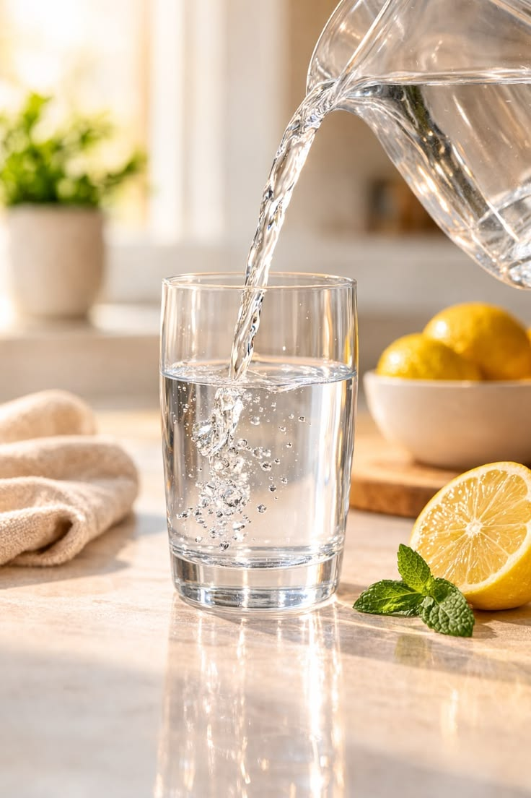
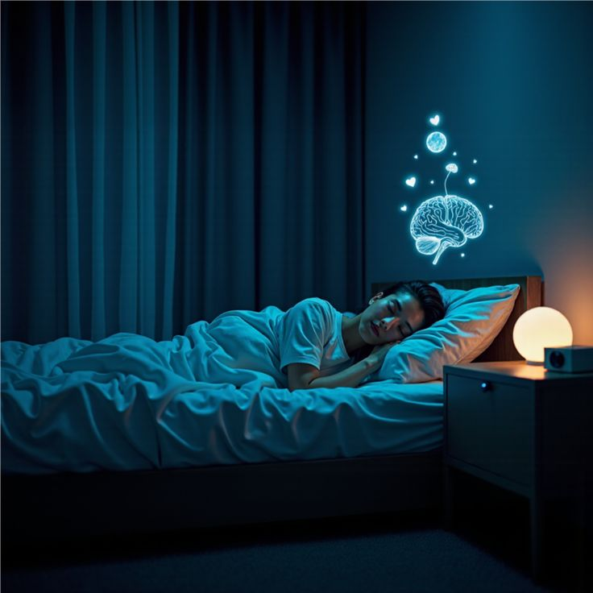
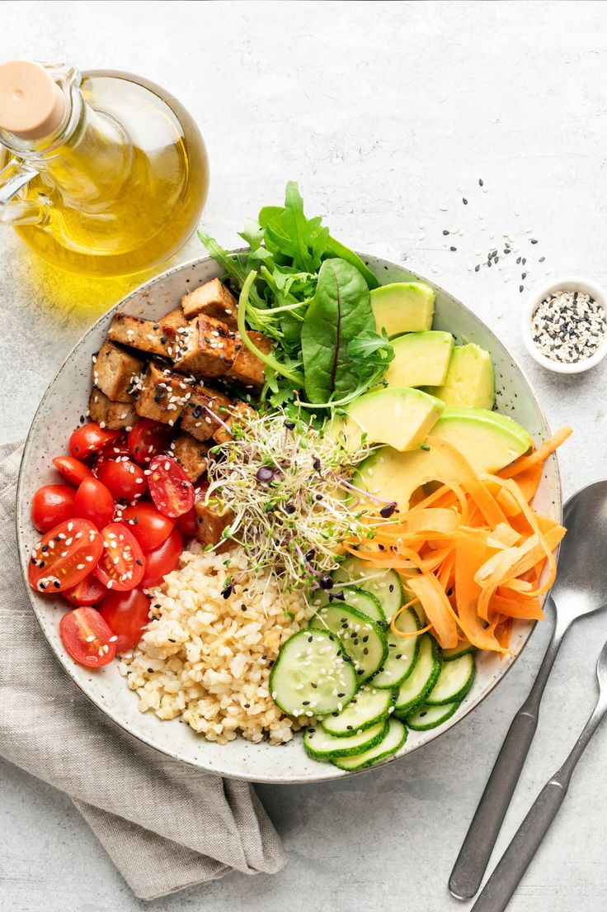
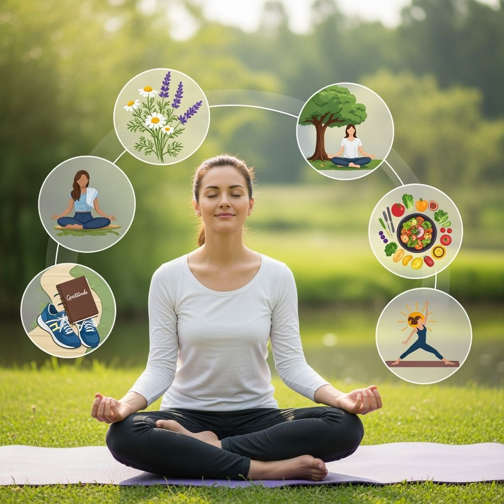

SDG Action Impact Simulator
Good health is built from small, repeatable habits. Pick the actions you already do (or would try) and see their combined impact. There are no "right answers" — it's about exploring choices and impact.
Move for 30 Minutes
Walking, cycling or a light jog keeps the heart strong and lifts your mood.
Impact points: 3

Stay Hydrated
Drinking enough water supports concentration, digestion and daily energy.
Impact points: 2

Prioritise Sleep
7-8 hours of quality sleep restores the body and mind every day.
Impact points: 4

Cook a Balanced Meal
Vegetables, protein and whole grains support the body far better than processed food.
Impact points: 3

Practise Mindfulness
A few quiet minutes of breathing or meditation lowers stress and builds resilience.
Impact points: 2

Book a Health Check-up
Routine check-ups catch small problems early, making prevention far easier than cure.
Impact points: 5
Your Impact Summary
Selected actions: 0 | Impact score: 0
Select an action above to see your impact level.